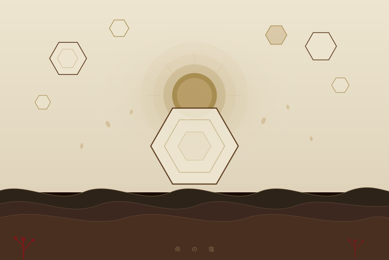
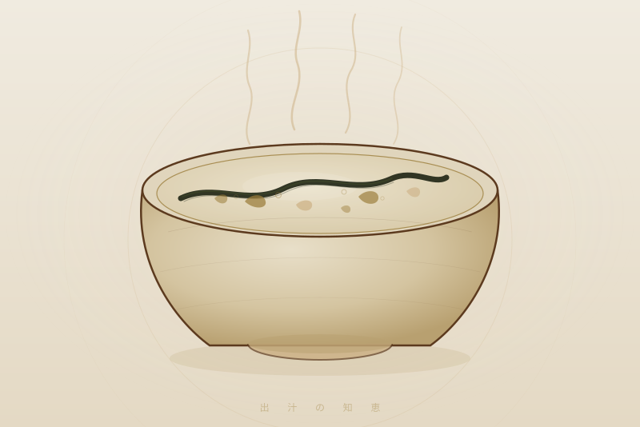
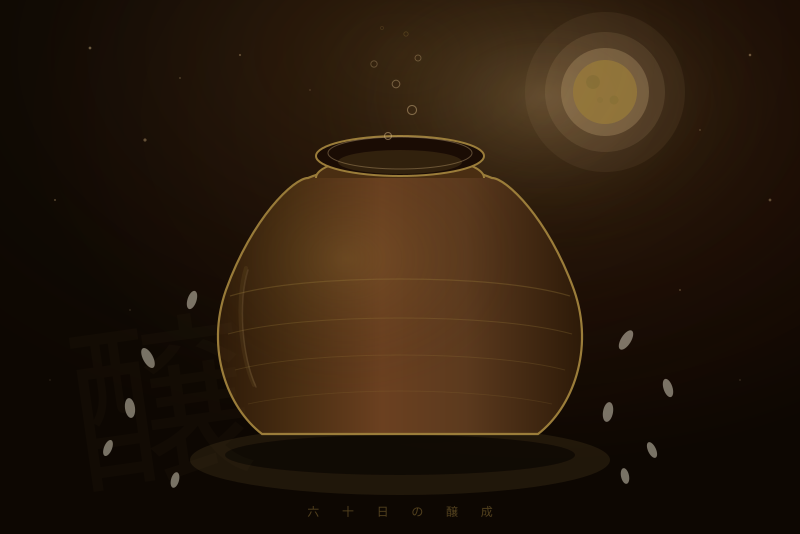
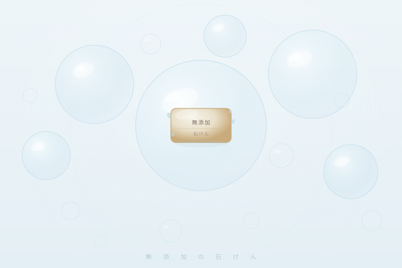

厳選商品
今おすすめしたいもの

Salt · 塩
ぬちまーす
Nuchimasu — Okinawa Sea Salt
— なぜ好きか
沖縄の太陽と海が生んだ、世界一ミネラルが豊富な塩。 精製塩と比べてまろやか。料理の味が根本から変わります。

Dashi · だし
三河白だし
Mikawa Shirodashi — White Soup Stock
— なぜ好きか
三河の醸造文化が生んだ、澄んだ白だし。 素材の色を殺さずに旨みを引き出す。 卵焼きが、別格においしくなります。

Mirin · みりん
みかわみりん
Mikawa Mirin — Authentic Hon-Mirin
— なぜ好きか
もち米・米麹・焼酎のみ。60日熟成の本みりん。 一度使うと、みりん風には戻れません。 照り焼きの照りが、全然違います。

Book · 書籍
家庭でできる自然療法
Natural Therapy at Home — Revised Ed.
— なぜ好きか
東城百合子著。薬に頼らず食と手当で身体を守る知恵。 梅番茶・こんにゃく湿布など、今すぐ試せる内容が詰まっています。

Sake · 日本酒
蓬莱 純米吟醸
家伝手造り
Hourai — Junmai Ginjo, Kaden Tezukuri
— なぜ好きか
北アルプスの清流と、飛騨の手造りの技が生む純米吟醸。 醸造アルコール不使用。米と水だけの純粋な旨みは、 本物の調味料で作った料理と自然に合う。

Soap · 石けん
シャボン玉石けん
Shabon-dama — Additive-Free Soap
— なぜ好きか
成分は石けん素地のみ。1971年から無添加を貫く北九州の会社。 食材にこだわるなら、肌に触れるものにも同じ基準を。 赤ちゃんから家族全員で使える安心感。